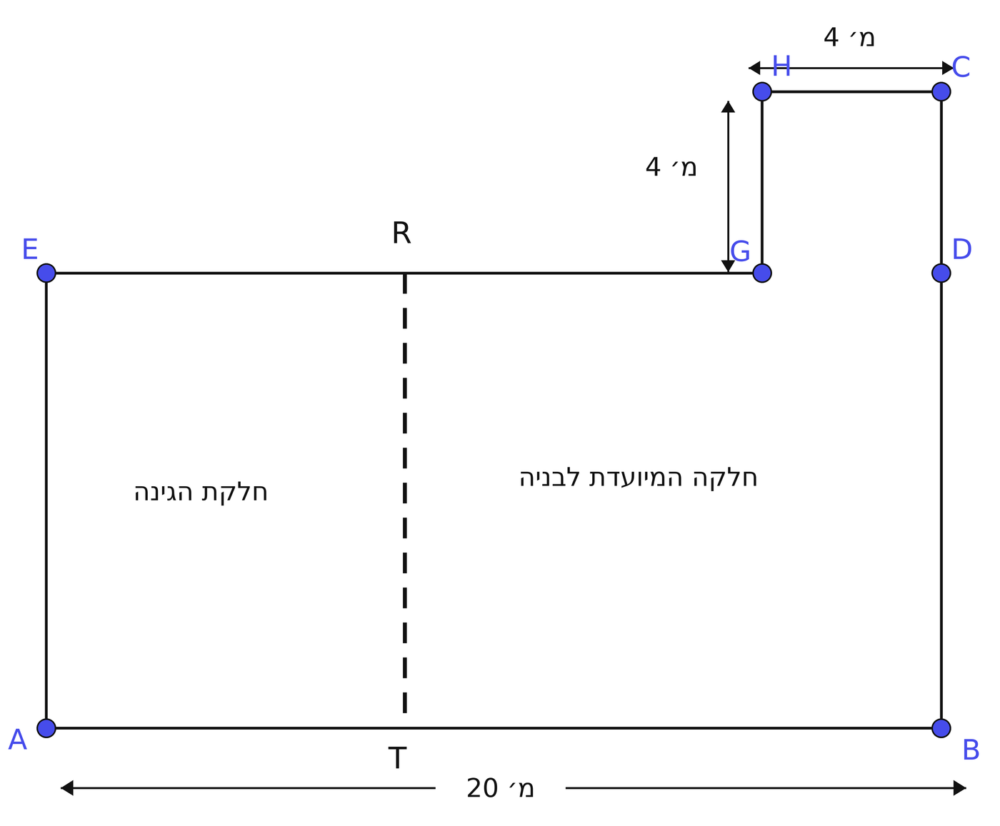

כל הכבוד! הסתיים שלב התרגול.
עכשיו מגיעה שאלת השיא
יש בה 4 סעיפים. עליכם לענות נכון על 2 לפחות.


אורי הציע לחלק את המגרש לשני אזורים:
שטח לבניית הבית ושטח לגינה. הפס המקווקו בשרטוט מסמן את קו ההפרדה ביניהם.
נתון כי היחס בין אורך AB לאורך AE הוא 2 : 1.
א. לפני שאורי יוכל להתחיל בתכנון, עליו לדעת מהו שטח המגרש כולו. חשבו את שטח המגרש.
לאחר שחישב את שטח המגרש, אורי סימן את קו ההפרדה בין הבית לגינה.
נתון כי קו ההפרדה מחלק את הקטע AB ביחס של
3 : 2.
ב. חשבו את השטח המיועד לגינה.
אחרי כמה ימים משפחת לוי התחרטה, והחליטה שהיא רוצה גינה גדולה יותר. הם ביקשו מאורי שהיחס בין שטח הגינה לשטח הבנייה יהיה 1 : 1.
ג. בהנחה ששטח הגינה לפני השינוי הוא 80 מ"ר, כמה שטח צריך אורי להעביר מהשטח המיועד לבנייה, אל הגינה, כדי לעמוד בבקשה החדשה?
ד. כמה שטח צריך אורי להעביר מהשטח המיועד לגינה אל השטח המיועד לבנייה כדי לעמוד בבקשתם?
כל הכבוד!